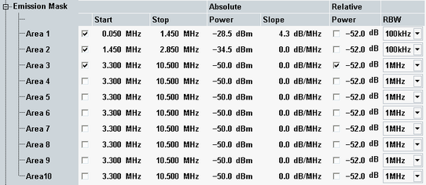

The energy that spills outside the designated radio channel increases the interference with adjacent channels and decreases the system capacity. The amount of unwanted off-carrier energy is assessed by the out-of-band emissions (excluding spurious emissions). They are specified in terms of the spectrum emission mask and the adjacent channel leakage power ratio (ACLR).
3GPP specifies spectrum emission masks depending on the type of the eNodeB, the channel bandwidth and the operating band.
In the configuration dialog, you can define one spectrum emission mask per channel bandwidth. The figure below shows the default settings for a channel bandwidth of 1.4 MHz.

For each emission mask area, you can define the start and stop frequencies, set an upper absolute and an upper relative power limit and select the resolution bandwidth.
The start and stop frequencies are defined relative to the edge of the channel bandwidth. Example: Assume 0 MHz as start frequency and 1 MHz as stop frequency for a channel bandwidth of 1.4 MHz. The resulting area ranges from +0.7 MHz to +1.7 MHz relative to the carrier frequency. As all ranges are symmetrical, it ranges also from -0.7 MHz to -1.7 MHz relative to the carrier frequency.
The absolute power limit is configured via a <power> parameter and a <slope> parameter. The absolute limit line is calculated from these parameters, the configured start frequency <start> and the <frequency> relative to the channel edge, using the following formula:
Absolute limit = <power> + <slope> * (<frequency> - <start>)
The relative power limit is defined as power relative to the "TX Power" measurement result. If the relative limit is enabled, the less stringent limit applies (absolute or relative power limit).
The emission mask requirements are defined in 3GPP TS 36.141, section 6.6.3 "Operating Band Unwanted Emissions". The default values correspond to the emission masks defined for a home BS and operating bands up to 3 GHz in section 6.6.3.5.2X.
The following tables provide an overview of these home BS requirements. Please note that the stop frequency in the last row of each table indicates the implemented default value. 3GPP instead defines f_offsetmax as stop frequency, which is "the offset to the frequency 10 MHz outside the downlink operating band".
Start to stop / MHz | Absolute limit | Relative limit / dB | RBW | ||
|---|---|---|---|---|---|
Power / dBm | Slope in dB/MHz | ||||
Area 1 | 0.05 to 1.45 | -28.5 | 4.3 | off | 100 kHz |
Area 2 | 1.45 to 2.85 | -34.5 | 0 | off | 100 kHz |
Area 3 | 3.30 to 10.50 | -50.0 | 0 | -52.0 | 1 MHz |
Start to stop / MHz | Absolute limit | Relative limit / dB | RBW | ||
|---|---|---|---|---|---|
Power / dBm | Slope in dB/MHz | ||||
Area 1 | 0.05 to 3.05 | -32.5 | -2.0 | off | 100 kHz |
Area 2 | 3.05 to 6.05 | -38.5 | 0 | off | 100 kHz |
Area 3 | 6.50 to 20.00 | -50.0 | 0 | -52.0 | 1 MHz |